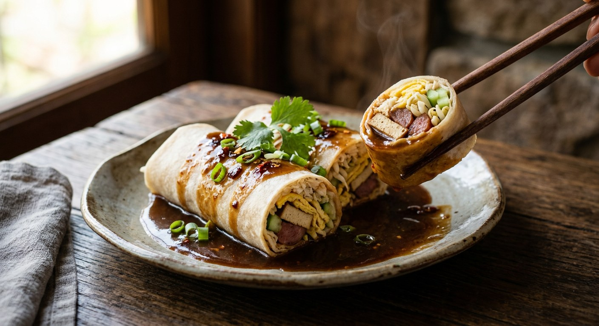

Fresh wheat wrappers rolled around five-spice stewed tofu, kun chiang sausage and shredded egg — then flooded with a sweet-sour pa-lo sauce so thick it barely pours.

ปอเปี๊ยะสด — also spelled เปาะเปี๊ยะสด — is the Chinese-Thai fresh spring roll: not the fried one (ปอเปี๊ยะทอด) and not the Vietnamese rice-paper roll, but a Teochew import that Bangkok's Yaowarat quarter has been selling from glass cabinets for a century. The wrapper is a soft white wheat sheet; everything inside is cooked; and the whole thing is drenched in น้ำราด, a five-spice pa-lo sauce sweetened hard, soured with tamarind, and thickened with starch until it clings.
The sauce is the dish, and every Thai source builds it around one trick: the tofu. Wongnai poaches fried tofu in pa-lo-spiced water until it turns brown, then builds the sauce on the same poaching liquid — the roll and the sauce share one pot of flavour. TrueID's แม่ซี goes further for her selling batch: the pork loin, tofu and mushrooms simmer inside the sauce itself, then get strained out — sauce and filling from a single pot — with a tasting rule she states plainly: หวานนำ เค็มตาม เปรี้ยวปิดท้าย, sweet leads, salty follows, sour finishes.
Kapook's ancient-style recipe remembers the details the modern ones drop: serve it with yellow mustard (ซอสมัสตาร์ด) on the side, roll tight and box it fast before the fresh pastry dries hard. And Nickktwf's home version — one of the few that includes หมูตั้ง, the pressed sweet pork that was once standard in Yaowarat rolls — blooms the pa-lo powder in hot oil first, the Cantonese start that most Thai recipes skip by stirring it into water. Five sources, one roll, five opinions on exactly how the sauce gets thick.
| Thai | English | Amount |
|---|---|---|
| แป้งเปาะเปี๊ยะสด | Fresh spring roll wrappers | 200 g |
| เต้าหู้ขาว | White tofu, cut into strips, fried | 1 block |
| ไข่เป็ด | Duck eggs, thin omelette, shredded | 2 |
| กุนเชียง | Kun chiang (Chinese sausage), fried, sliced | 2 links |
| ถั่วงอก | Bean sprouts, blanched | 100 g |
| แตงร้าน | Cucumber, cut into strips | 2 |
| เนื้อปูก้อน | Crab meat (garnish) | 1 cup |
| ต้นหอม | Spring onions | 4 |
| พริกชี้ฟ้าแดง | Red spur chilli, sliced | 1 |
| เครื่องพะโล้ชนิดผง | Pa-lo five-spice powder | 1 sachet |
| น้ำสะอาด | Water (tofu poach) | ½ litre |
| น้ำสะอาด | Water (sauce) | 1 litre |
| น้ำตาลทรายแดง | Brown sugar | 2 tbsp |
| เกลือ | Salt | 2 tsp |
| น้ำมันงา | Sesame oil | 3 tsp |
| งาขาวคั่ว | Roasted white sesame | 2 tbsp |
| แป้งมันละลายน้ำ | Tapioca starch, mixed with water | 2½ tbsp |
| น้ำต้มพะโล้ | Pa-lo poaching liquid (leftover) | — |
The selling batch (TrueID, แม่ซี): 1 litre water, 1 tbsp pa-lo powder, 2 tbsp oyster sauce, 1 tbsp seasoning sauce, 1 tbsp light soy, ½ tsp salt, 240 g unbleached sugar, 1½ tbsp tamarind water, 1 tbsp sweet dark soy — the pork (350 g loin, or moo tang), firm tofu and 100 g fresh shiitake simmer in it, then get strained out; thicken the liquid with corn starch and the filling is ready. The ancient batch (Kapook): the sauce gains 2 tbsp pa-lo powder, 8 tbsp tamarind water and dark soy, is thickened with a rice-flour slurry, and the rolls are served with yellow mustard on the side. The home version with moo tang (Nickktwf): the pa-lo powder is fried in oil first, the sauce simmers 150 g pork in stock with palm and brown sugar, and the roll gets pressed sweet pork (หมูตั้ง) plus the poached pork.
The thickener. Wongnai uses tapioca starch; Kapook's ancient recipe uses rice flour (its recommendation for a glossy, viscous finish); TrueID and sujitrar's chicken version use corn starch; Nickktwf uses wheat flour. Four starches, one job — and every source warns to pour the slurry in a thin stream while stirring, never all at once.
The sweetener. Wongnai sweetens with brown sugar alone; TrueID uses 240 g of unbleached white sugar; Nickktwf uses palm sugar plus brown sugar; Kapook uses plain white sugar. What they agree on is the balance: sugar dominates, salt follows, sour closes — TrueID's หวานนำ เค็มตาม เปรี้ยวปิดท้าย.
The meat. Wongnai's roll is meat-free — crab meat goes on top as garnish. TrueID simmers pork loin (with moo tang as an alternative), Nickktwf packs in moo tang plus poached pork, sujitrar uses shredded poached chicken, and Kapook's ancient batch skips meat entirely beyond the kun chiang. Moo tang (หมูตั้ง, pressed sweet pork) appears only in the two home-scale versions — the traditional Yaowarat filling most blogs cannot source.
Mustard or not. Only Kapook's ancient-style recipe serves ซอสมัสตาร์ด, yellow mustard, alongside the roll — a Yaowarat habit the other four sources never mention.
The tofu. Wongnai fries the tofu before poaching so it does not fall apart in the sauce; Kapook, TrueID and sujitrar poach or stew it raw; Nickktwf stir-fries it with the pa-lo powder in oil.
The pa-lo powder. Nickktwf alone blooms it in hot oil first (ผัดพอหอม), the Cantonese start; everyone else stirs it into the water. Same spice, different aromatics — the fried version smells deeper and toastier.
The wrapper. TrueID and sujitrar name the source: the fresh sheets sold by rotee sai mai sellers. Wongnai just calls them แป้งเปาะเปี๊ยะสด. Nobody suggests rice paper.
This recipe is translated from the following Thai-language sources. Where they disagree, we've said so.
1. Wongnai — "วิธีทำ 'เปาะเปี๊ยะสด' เมนูกินเล่น เครื่องระเบิดระเบ้อ เด็ดเวอร์ที่น้ำราด" (the recipe used here) — wongnai.com
2. Kapook — "เปาะเปี๊ยะสดสูตรโบราณ เคล็ดลับน้ำราดรสเข้มข้น เนื้อเนียนข้นหนืด ทำง่าย อร่อยฟิน" (the ancient-style selling batch, mustard, rice-flour slurry) — cooking.kapook.com
3. TrueID Food — "สูตรทำปอเปี๊ยะสด พร้อมน้ำราดสูตรเด็ด วิธีทำละเอียด ทำขายได้เลย" by แม่ซี น้องมดดี้ (the selling batch) — food.trueid.net
4. Wongnai Community — "สูตร ปอเปี๊ยะสด พร้อมวิธีทำโดย Nickktwf" (the moo tang home version, oil-bloomed pa-lo) — wongnai.com
5. Kapook — "เปาะเปี๊ยะสด ใส่ไก่ฉีกเครื่องแน่นพร้อมสูตรน้ำราดรสเข้มข้น" by sujitrar (the chicken version, rotee sai mai wrappers) — cooking.kapook.com